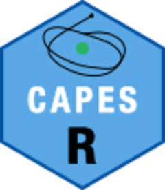

Search for terms in text fields of the CAPES Catalog of Theses and Dissertations data
Source:R/capes.R
search_capes_text.RdThis function allows searching for specific terms in the text fields of a previously loaded `data.frame`.
Examples
# \donttest{
# Download data for the years 1987 and 1990
capes_files <- download_capes_data(c(1987, 1990))
#> File already exists: C:\Users\HUGO~1.VAS\AppData\Local\Temp\RtmpeqmqwL/capes_1987.parquet
#> File already exists: C:\Users\HUGO~1.VAS\AppData\Local\Temp\RtmpeqmqwL/capes_1990.parquet
# Combine all selected data
combined_data <- read_capes_data(capes_files)
# Search data
results <- search_capes_text(
data = combined_data,
term = "Educação",
field = "titulo"
)
#> No results found for the search.
# }